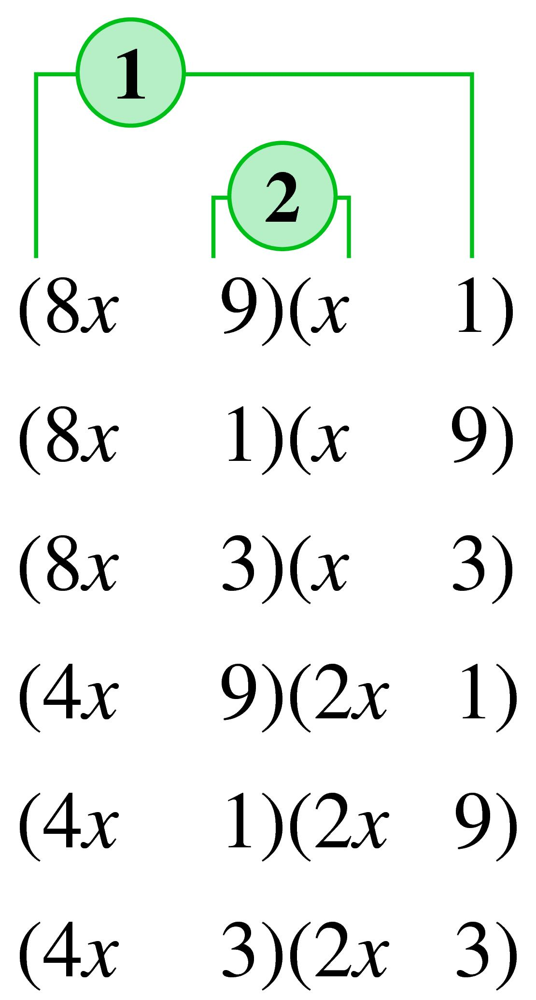

Section A.8 Factoring Quadratic Trinomials
¶Consider the trinomial
Can we find two binomial factors,
whose product is the given trinomial? The product of the binomials is
Thus, we are looking for two numbers, \(a\) and \(b\text{,}\) that satisfy
By comparing the coefficients of the terms in the two trinomials, we see that \(\alert{a + b = 10}\) and \(\blert{ab = 16}\text{.}\) That is, the sum of the two numbers is the coefficient of the linear term, \(10\text{,}\) and their product is the constant term, \(16\text{.}\)
To find the numbers, we list all the possible integer factorizations of \(16\text{:}\)
We see that only one combination gives the correct linear term: \(8\) and \(2\text{.}\) These are the numbers \(a\) and \(b\text{,}\) so
In Example A.8.1 we factor quadratic trinomials in which one or more of the coefficients is negative.
Example A.8.1.
Factor.
\(x^2-7x+12\)
\(x^2-x-12\)
-
Find two numbers whose product is \(12\) and whose sum is \(-7\text{.}\) Because the product is positive and the sum is negative, the two numbers must both be negative. The possible factors of \(12\) are \(-1\) and \(-12\text{,}\) \(-2\) and \(-6\text{,}\) or \(-3\) and \(-4\text{.}\) Only \(-4\) and \(-3\) have the correct sum, \(-7\text{.}\) Hence,
\begin{equation*} x^2 - 7x + 12 = (x - 4) (x - 3) \end{equation*} -
Find two numbers whose product is \(-12\) and whose sum is \(-1\text{.}\) Because the product is negative, the two numbers must be of opposite sign and their sum must be \(-1\text{.}\) By listing the possible factors of \(-12\text{,}\) we find that the two numbers are \(-4\) and \(3\text{.}\) Hence,
\begin{equation*} x^2 - x - 12 = (x - 4) (x + 3) \end{equation*}
If the coefficient of the quadratic term is not \(1\text{,}\) we must also consider its factors.
Example A.8.2.
Factor \(~8x^2 - 9 - 21x\)
-
Write the trinomial in decreasing powers of \(x\text{.}\)
\begin{equation*} 8x^2-21x-9 \end{equation*} -
List the possible factors for the quadratic term.
\begin{align*} (8x\hphantom{00000})\amp(x\hphantom{000000})\\ (4x\hphantom{00000})\amp(2x\hphantom{00000}) \end{align*} -
Consider possible factors for the constant term: \(9\) may be factored as \(9\cdot 1\) or as \(3\cdot 3\text{.}\) Form all possible pairs of binomial factor using these factorizations.
 -
Select the combinations of the products ① and ② whose sum or difference could be the linear term, \(-21x\text{.}\)
\begin{equation*} (8x \hphantom{000} 3) (x \hphantom{000} 3) \end{equation*} -
Insert the proper signs:
\begin{equation*} (8x + 3) (x - 3) \end{equation*}
With practice, you can usually factor trinomials of the form \(Ax^2 + Bx + C\) mentally. The following observations may help.
-
If \(A\text{,}\) \(B\) and \(C\) are all positive, both signs in the factored form are positive. For example, as a first step in factoring \(6x^2 + 11x + 4\text{,}\) we could write
\begin{equation*} (\hphantom{000} + \hphantom{000} ) (\hphantom{000} + \hphantom{000} ) \end{equation*} -
If \(A\) and \(C\) are positive and \(B\) is negative, both signs in the factored form are negative. Thus as a first step in factoring \(6x^2 - 11x + 4\text{,}\) we could write
\begin{equation*} (\hphantom{000} - \hphantom{000} ) (\hphantom{000} - \hphantom{000} ) \end{equation*} -
If \(C\) is negative, the signs in the factored form are opposite. Thus as a first step in factoring \(6x^2 - 5x - 4\text{,}\) we could write
\begin{equation*} (\hphantom{000} + \hphantom{000} ) (\hphantom{000} - \hphantom{000} ) ~~\text{ or }~~ (\hphantom{000} - \hphantom{000} ) (\hphantom{000} + \hphantom{000} ) \end{equation*}
Example A.8.3.
\(\begin{aligned}[t] 6x^2 + 5x + 1 \amp = (\hphantom{00} + \hphantom{00} ) (\hphantom{00} + \hphantom{00} )\\ \amp = (3x + 1) (2x + 1) \end{aligned}\)
\(\begin{aligned}[t] 6x^2 - 5x + 1 \amp = (\hphantom{00} - \hphantom{00} ) (\hphantom{00} - \hphantom{00} )\\ \amp = (3x - 1) (2x - 1) \end{aligned}\)
\(\begin{aligned}[t] 6x^2 - x - 1 \amp = (\hphantom{00} + \hphantom{00} ) (\hphantom{00} - \hphantom{00} )\\ \amp = (3x + 1) (2x - 1) \end{aligned}\)
\(\begin{aligned}[t] 6x^2 - xy - y^2 \amp = (\hphantom{00} + \hphantom{00} ) (\hphantom{00} - \hphantom{00} )\\ \amp = (3x + y) (2x - y) \end{aligned}\)
Subsection A.8.1 Special Products and Factors
The products below are special cases of the multiplication of binomials. They occur so often that you should learn to recognize them on sight.
Special Products.
\((a + b)^2 = (a + b) (a + b) = a^2 + 2ab + b^2\)
\((a - b)^2 = (a - b) (a - b) = a^2 - 2ab + b^2\)
\((a + b)(a-b) = a^2 - b^2\)
Caution A.8.4.
Notice that in (I) \(~~(a + b)^2 \ne a^2 + b^2~~\text{,}\) and that in (II) \(~~(a - b)^2\ne a^2 - b^2~~\text{.}\) For example,
Example A.8.5.
\(\begin{aligned}[t] 3(x + 4)^2 \amp = 3(x^2 + 2 \cdot 4x + 4^2) \\ \amp = 3x^2 + 24x + 48 \end{aligned}\)
\(\begin{aligned}[t] (y + 5) (y - 5) \amp = y^2-5^2 \\ \amp = y^2-25 \end{aligned}\)
\(\begin{aligned}[t] (3x - 2y)^2 \amp = (3x)^2 - 2(3x)(2y) + (2y)^2 \\ \amp = 9x^2-12xy+4y^2 \end{aligned}\)
Each of the formulas for special products, when viewed from right to left, also represents a special case of factoring quadratic polynomials.
Special Factorizations.
\(a^2 + 2ab + b^2=(a + b)^2\)
\(a^2 - 2ab + b^2=(a - b)^2 \)
\(a^2 - b^2=(a + b)(a-b)\)
\(a^2+b^2 ~~\text{ cannot be factored}\)
The trinomials in (I) and (II) are sometimes called perfect-square trinomials because they are squares of binomials. Note that the sum of two squares, \(a^2 + b^2\text{,}\) cannot be factored.
Example A.8.6.
Factor.
\(x^2 + 8x + 16\)
\(y^2 -10y + 25\)
\(4a^2 - 12ab + 9b^2\)
\(25m^2n^2 + 20mn + 4\)
-
Because \(16\) is equal to \(4^2\) and \(8\) is equal to \(2\cdot 4\text{,}\)
\begin{align*} x^2 + 8x + 16 \amp = x^2 - 2 \cdot 4x + 4^2\\ \amp = (x + 4)^2 \end{align*} -
Because \(25=5^2\) and \(10=2\cdot 5\text{,}\)
\begin{align*} y^2 - 10y + 25 \amp = y^2 - 2 \cdot 5y + 5^2\\ \amp = (y-5)^2 \end{align*} -
Because \(4a^2=(2a)^2\text{,}\) \(9b^2=(3b)^2\text{,}\) and \(2ab=2(2a)(3b)\text{,}\)
\begin{align*} 4a^2 - 12ab + 9b^2 \amp = (2a)^2 - 2(2a)(3b) + (3b)^2\\ \amp = (2a-3b)^2 \end{align*} -
Because \(25m^2n^2=(5mn)^2\text{,}\) \(4=2^2\text{,}\) and \(20mn=2(5mn)(2)\text{,}\)
\begin{align*} 25m^2n^2 + 20mn + 4 \amp = (5mn)^2 + 2(5mn)(2) + 2^2\\ \amp = (5mn+2)^2 \end{align*}
Binomials of the form \(a^2 - b^2\) are often called the difference of two squares.
Example A.8.7.
Factor if possible.
\(x^2 - 81\)
\(4x^2 - 9y^2\)
\(x^2 + 81\)
-
The expression \(x^2 - 81\) is the difference of two squares, \(x^2 - 9^2\text{,}\) and thus can be factored according to Special Factorization (III) above.
\begin{align*} x^2-81 \amp = x^2-9^2\\ \amp = (x+9)(x-9) \end{align*} -
Because \(4x^2 - 9y^2\) can be written as \((2x)^2 -(3y)^2\text{,}\)
\begin{align*} 4x^2 - 9y^2 \amp =(2x^2)-(3y)^2 \\ \amp =(2x+3y)(2x-3y) \end{align*} The expression \(x^2 + 81\text{,}\) or \(x^2 + 0x + 81\text{,}\) is not factorable, because no two real numbers have a product of \(81\) and a sum of \(0\text{.}\)
Caution A.8.8.
\(x^2 + 81\ne (x + 9) (x + 9)\text{,}\) which you can verify by multiplying
The factors \(x + 9\) and \(x - 9\) in Example A.8.7a are called conjugates of each other. In general, any binomials of the form \(a+b\) and \(a-b\) are called a conjugate pair.
Subsection A.8.2 Section Summary
¶Subsubsection A.8.2.1 Vocabulary
Look up the definitions of new terms in the Glossary.
Perfect-square trinomial
Difference of squares
Conjugate
Subsubsection A.8.2.2 SKILLS
Practice each skill in the exercises listed.
Factor quadratic trinomials: #1–36
Expand special products: #37–48
Factor special quadratic expressions: #49–68
Exercises A.8.3 Exercises A.8
¶For Problems 1-36, factor completely.
1.
\(x^2+5x+6 \)
\((x+2)(x+3) \)
2.
\(x^2+5x+4\)
3.
\(y^2-7y+12\)
\((y-3)(y-4)\)
4.
\(y^2-7y+10\)
5.
\(x^2-6-x\)
\((x-3)(x+2) \)
6.
\(x^2-15-2x\)
7.
\(2x^2+3x-2\)
\((2x-1)(x+2) \)
8.
\(3x^2-7x+2\)
9.
\(7x+4x^2-2\)
\((4x-1)(x+2) \)
10.
\(1-5x+6x^2\)
11.
\(9y^2-21y-8\)
\((3y+1)(3y-8) \)
12.
\(10y^2-3y-18\)
13.
\(10u^2-3-u\)
\((2u+1)(5u-3) \)
14.
\(8u^2-3+5u\)
15.
\(21x^2-43x-14\)
\((3x-7)(7x+2) \)
16.
\(24x^2-29x+5\)
17.
\(5a+72a^2-25\)
\((9a+4)(8a-3) \)
18.
\(-30a+72a^2-25\)
19.
\(12-53x+30x^2\)
\((2x-3)(15x-4) \)
20.
\(39x+80x^2-20\)
21.
\(-30t-44+54t^2\)
\(2(3t+2)(9t-11) \)
22.
\(48t^2-122t+39\)
23.
\(3x^2-7ax+2a^2\)
\((x-2a)(3x-a) \)
24.
\(9x^2+9ax-10a^2\)
25.
\(15x^2-4xy-4y^2\)
\((3x-2y)(5x+2y) \)
26.
\(12x^2+7xy-12y^2\)
27.
\(18u^2+20v^2-39uv\)
\((3u-4v)(6u-5v) \)
28.
\(24u^2-20v^2+17uv\)
29.
\(12a^2-14b^2-13ab\)
\((3a+2b)(4a-7b) \)
30.
\(24a^2-15b^2-2ab\)
31.
\(10a^2b^2-19ab+6\)
\((5ab-2)(2ab-3) \)
32.
\(12a^2b^2-ab-20\)
33.
\(56x^2y^2-2xy-4\)
\(2(4xy+1)(7xy-2) \)
34.
\(54x^2y^2+3xy-2\)
35.
\(22a^2z^2-21-19az\)
\((2az-3)(11az+7) \)
36.
\(26a^2z^2-24+23az\)
For Problems 37-48, write the expression as a polynomial and simplify.
37.
\((x+3)^2 \)
\(x^2+6x+9 \)
38.
\((y-4)^2 \)
39.
\((2y-5)^2 \)
\(4y^2-20y+25 \)
40.
\((3x+2)^2 \)
41.
\((x+3)(x-3) \)
\(x^2-9 \)
42.
\((x-7)(x+7) \)
43.
\((3t-4s)(3t+4s) \)
\(9t^2-16s^2 \)
44.
\((2x+a)(2x-a) \)
45.
\((5a-2)(5a-2) \)
\(25a^2-20ab+4b^2 \)
46.
\((4u+5v)(4u+5v) \)
47.
\((8xz+3)(8xz+3) \)
\(64x^2z^2+48xz+9 \)
48.
\((7yz-2)(7yz-2) \)
For Problems 49-68, factor completely.
49.
\(x^2-25 \)
\((x+5)(x-5) \)
50.
\(x^2-36 \)
51.
\(x^2-24x+144 \)
\((x-12)^2 \)
52.
\(x^2+26x+169 \)
53.
\(x^2-4y^2 \)
\((x+2y)(x-2y) \)
54.
\(9x^2-y^2 \)
55.
\(4x^2+12x+9 \)
\((2x+3)^2 \)
56.
\(4y^2+4y+1 \)
57.
\(9u^2-30uv+25v^2 \)
\((3u-5v)^2 \)
58.
\(16s^2-56st+49t^2 \)
59.
\(4a^2-25b^2 \)
\((2a+5b)(2a-5b) \)
60.
\(16a^2-9b^2 \)
61.
\(x^2y^2-81 \)
\((xy+9)(xy-9) \)
62.
\(x^2y^2-64 \)
63.
\(9x^2y^2+6xy+1 \)
\((3xy+1)^2 \)
64.
\(4x^2y^2+12xy+9 \)
65.
\(16^2y^2-1 \)
\((4xy-1)(4xy+1) \)
66.
\(64x^2y^2-1 \)
67.
\((x+2)^2-y^2 \)
\((x+2-y)(x+2+y) \)
68.
\(x^2-(y-3)^2 \)